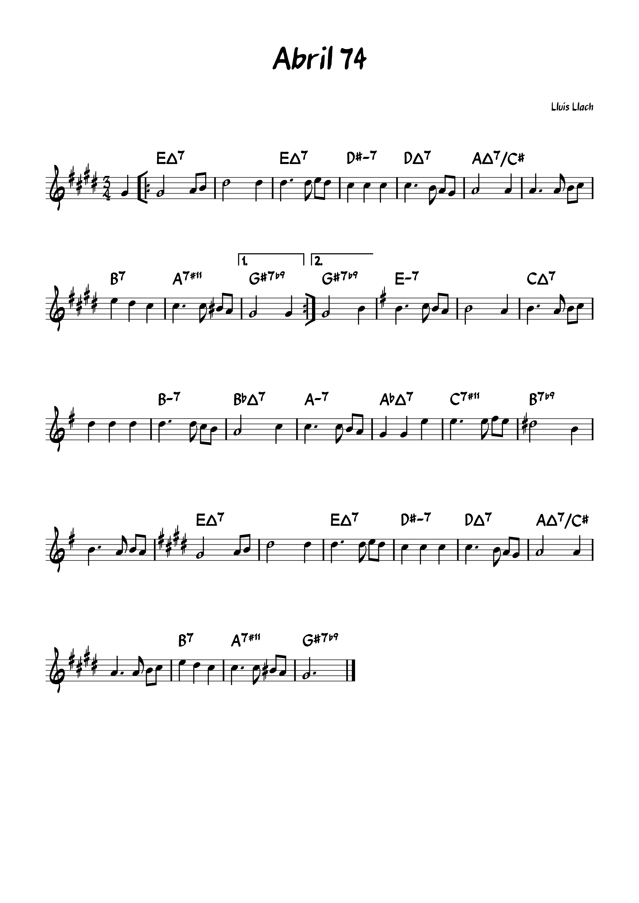

Joan Sardans Pla - Músic

Biografia
Vaig iniciar els estudis de música clàssica al Conservatori de Música de Manresa.
Vaig continuar estudiant violí al Conservatori Superior de Música de Barcelona amb l'Eva Graubin, jazz i música moderna al Taller de Músics de Barcelona amb l'Horacio Fumero i al Conservatori de Música de Rotterdam amb el Michael Gustorf, i flamenc amb el César Moreno.
També he estudiat piano, viola, mandolina i mandola.
Experiència professional
He estat violinista de l'Orquestra de Cambra de Granollers, de la banda de gipsy swing Bourbon Street del Bages, del grup de rumba Atablas, del guitarrista Oscar Guzmán de Sevilla, del "tablao" Cuevas los Tarantos de Granada i del grup local Los Chanelos, del "tablao" Corral de la Pacheca de Madrid, del "tablao" Palacio del Flamenco de Barcelona i de la banda Rumbesia.
També he estat violista a l'Orquestr@Berguedà i professor a l'escola de música Jam Session de Barcelona i a l'Escola de Música del Lluçanès.
Vídeos Musicals
Interpretacions en directe, sessions d'estudi i actuacions amb diferents formacions
Actuació en Grup
Col·laboració amb formació completa i cantador mostrant la versatilitat en entorns de grups.
Formació de Jazz
Interpretació amb violí en formació de cambra, mostrant versatilitat en diferents estils.
Partitures Musicals
Col·lecció de partitures per a l'estudi

Contrapàs de Prats de Lluçanès
Adaptació del Contrapàs de Prats de Lluçanès.

Abril 74
Adaptació del clàssic del Lluís Llach.
Grans Graons
Adaptació aflamencada del clàssic de John Coltrane.

Tanguillos de Luxe
Adaptació per Tanguillos de Lush Life de Billy Strayhorn.